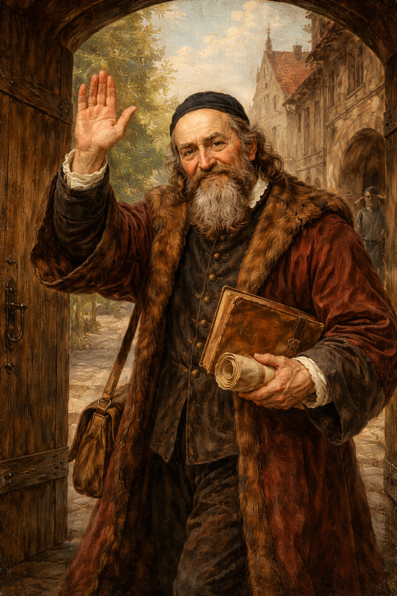

Kdo jsem a co je mým odkazem
Můj život byl plný strastí a zkoušek.
Kvůli své víře a lásce k pravdě jsem musel po bitvě na Bílé hoře navždy opustit milovanou vlast a stát se celoživotním vyhnancem.
Ztratil jsem rodinu při morové ráně a mnohé z mých životních děl pohltily plameny při požáru polského Lešna.
Kým tedy jsem? Jsem posledním biskupem Jednoty bratrské, teologem, ale především učitelem.

Zobrazit více
Zpět